You picked 1. This is the real Science page on a draft copy of the site. Each film rests on the first screen, scrolls all the way through, and rests on the last view. Nothing is live.
You open inside one cell with the gold adrift. Scrolling pulls back: the cell seen whole, a big hand holding a small one, then a grandfather and a grandchild on the trail, where "Why start with the cell?" stands.
The last view, as a still
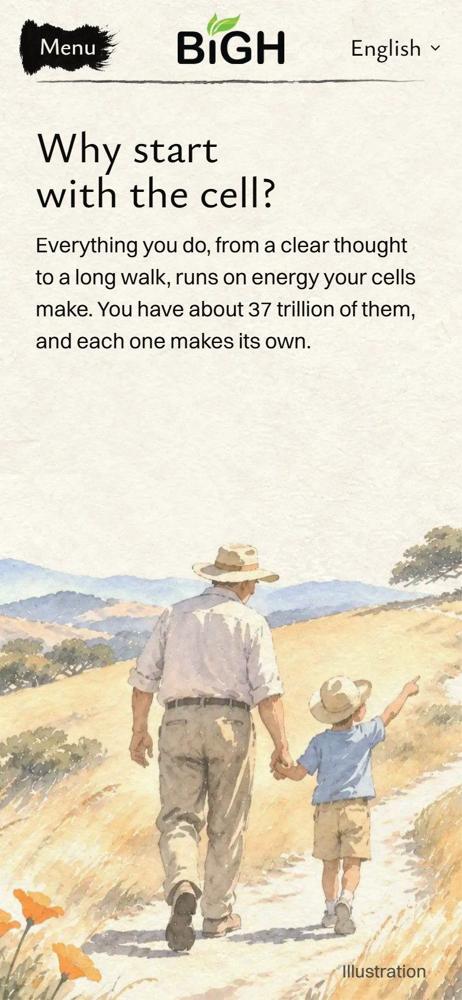
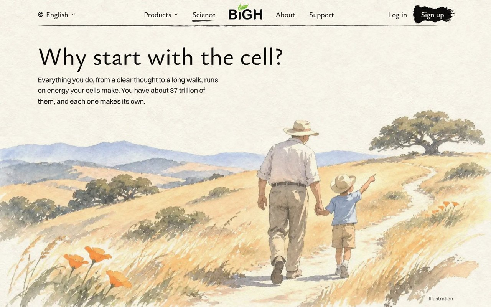
What is new since the samples
Three new paintings besides the one you picked: the two joined hands close up, and tall versions of the hands and of the pair for phones, so nothing is cropped there. The pull-back now starts exactly where the big hand stood, so the two pictures read as one move.
What holds it back
I have judged the motion from filmed frames, not by scrolling it with a hand. For a moment, as the big hand gives way to the pair, the picture is soft. Until you read the words, the first screen could still be water with gold leaves.
Kept here so you can look back. You picked 1.
A grandfather and a grandchild on the trail. The hand you were just inside turns out to be holding a small one.
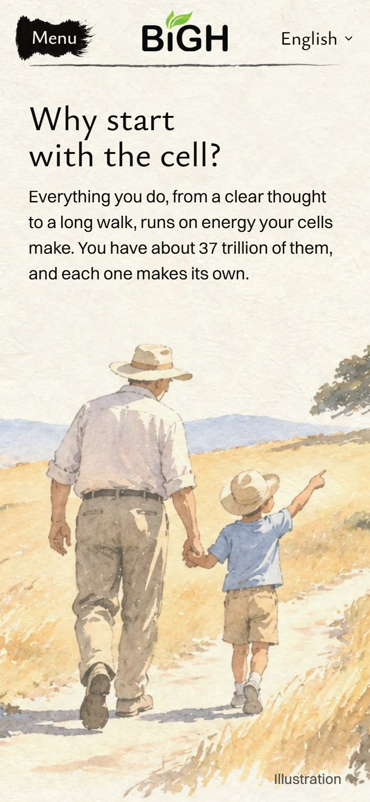
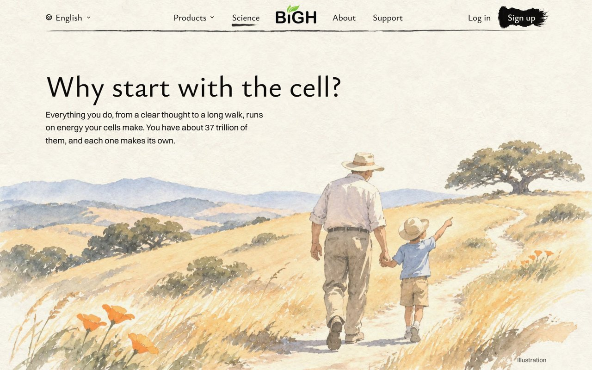
Holds it back: it is sweet, and some people may find it a little sentimental.
A woman picks oranges. Her reaching hand is the clearest hand of the four, so it is easy to see where the cell was. It has the most colour.
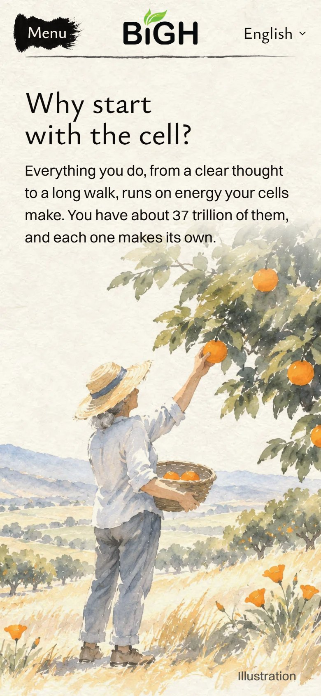
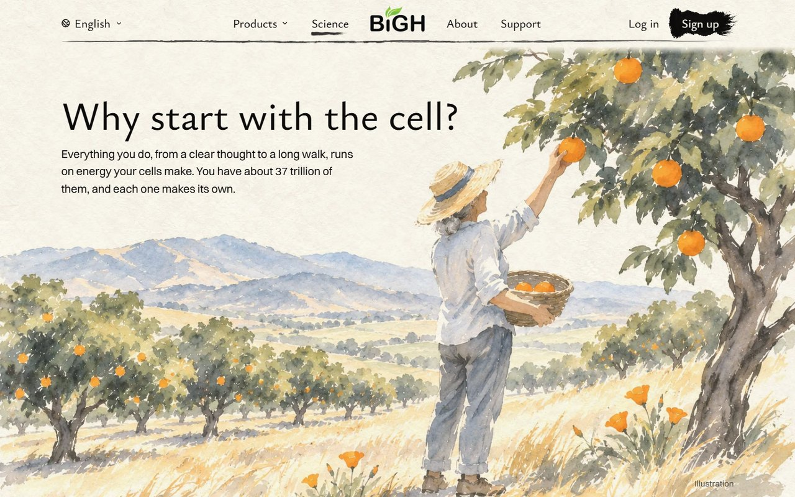
Holds it back: the tree crowds the top right, near the menu bar and the end of the heading. A final painting would keep it clear.
A silver-haired surfer walks down to the Pacific at first light. It says California and energy the fastest.
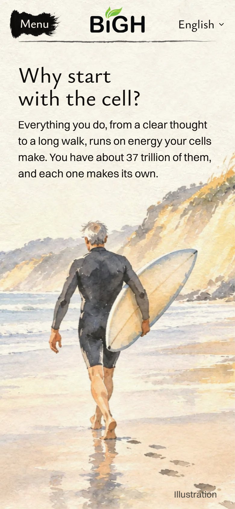
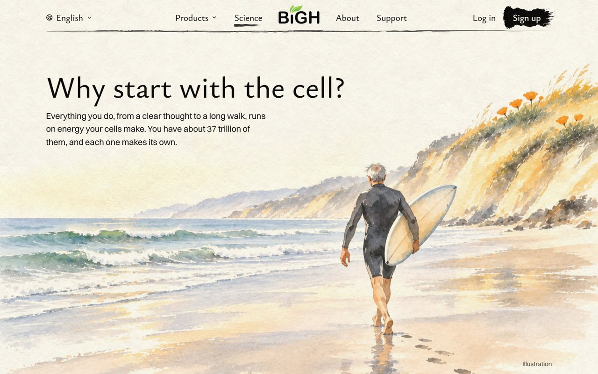
Holds it back: far more of your customers walk than surf, so fewer will see themselves in it. The words say "a long walk" and would need to change.
Today's hills with the walker about three times bigger and nearer the middle. The smallest change.
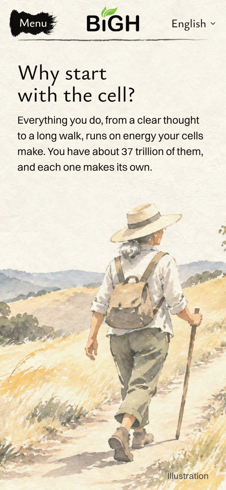
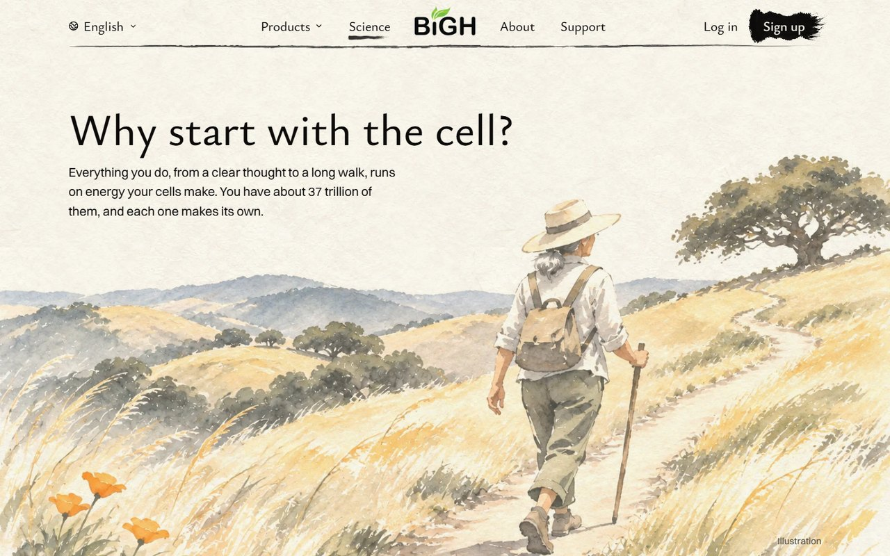
Holds it back: it is still one person hiking, so it may still feel plain to you.
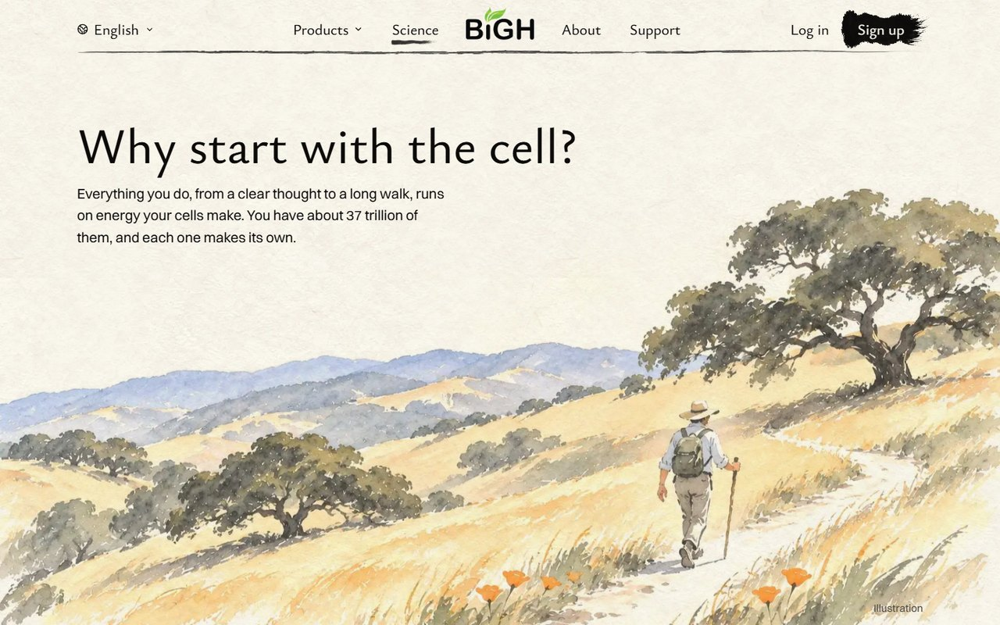
Kept here so you can look back. A was my pick after painting. B was my pick in words, but it did not paint well.
The first screen is the inside of one cell. Its gold slivers, the mitochondria, drift slowly. Scroll, and the view pulls back: out of the cell, to a hand, to a walker on the golden hills.
When you scroll
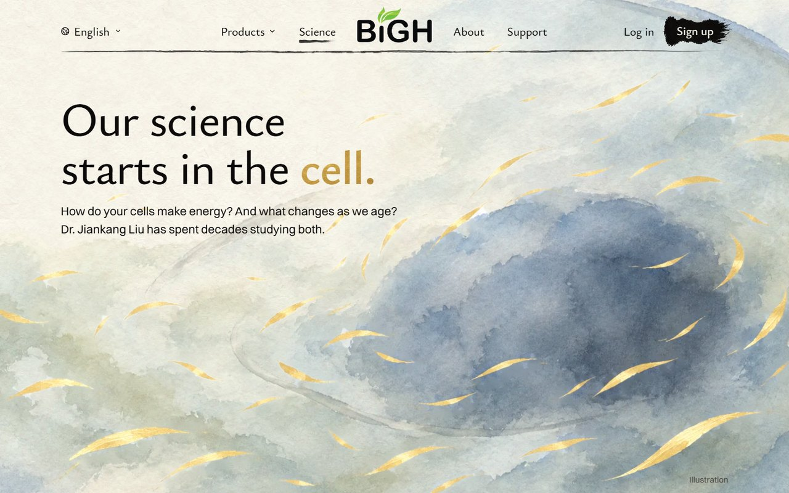
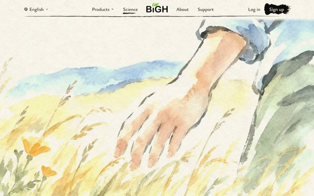
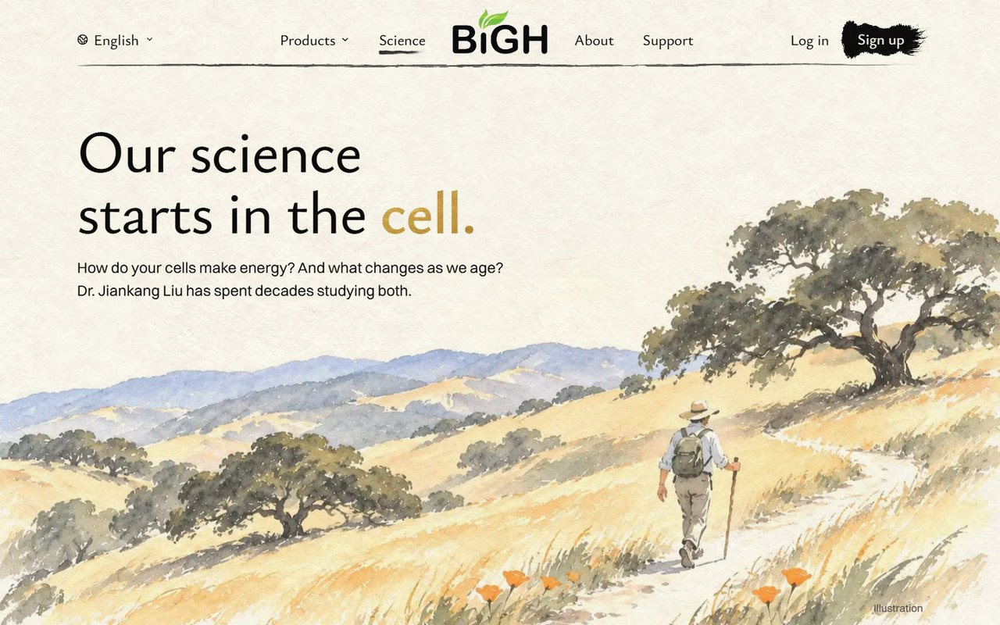
What holds it back
Until you read the words, it could be water or mist with gold leaves. It is also close to "one big cell", which you passed on last time. The new part is that the zoom runs backwards.
The words lead, very large. The full stop after "cell" is a dot of gold leaf, and one cell waits below it with its gold adrift. Scroll, and that cell grows to fill the screen.
When you scroll
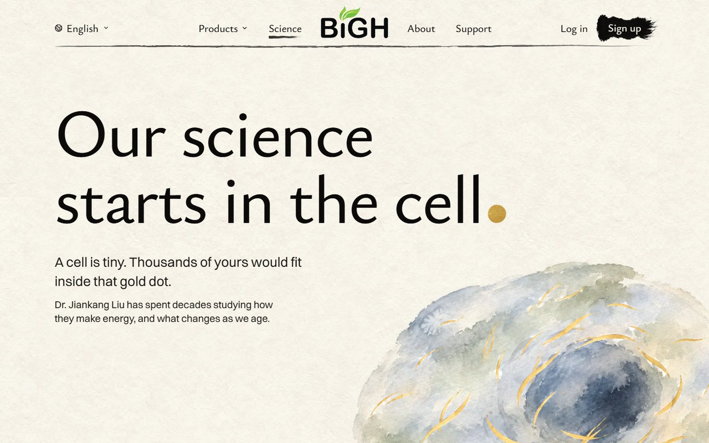
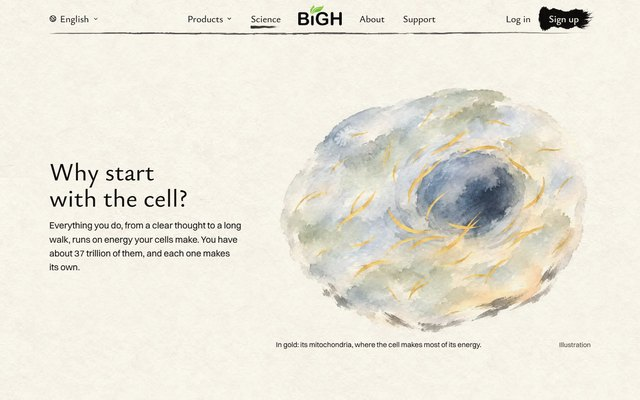
What holds it back
There is less painting on the first screen than in the others, and no California. The "thousands would fit" line is my own arithmetic from a typical cell's size. It needs a source before it goes live.
The same golden hills. The walker is about three times bigger and near the middle, so she is clearly the main thing. A cloud's shadow drifts over the hills. Scrolling works as it does today.
When you scroll
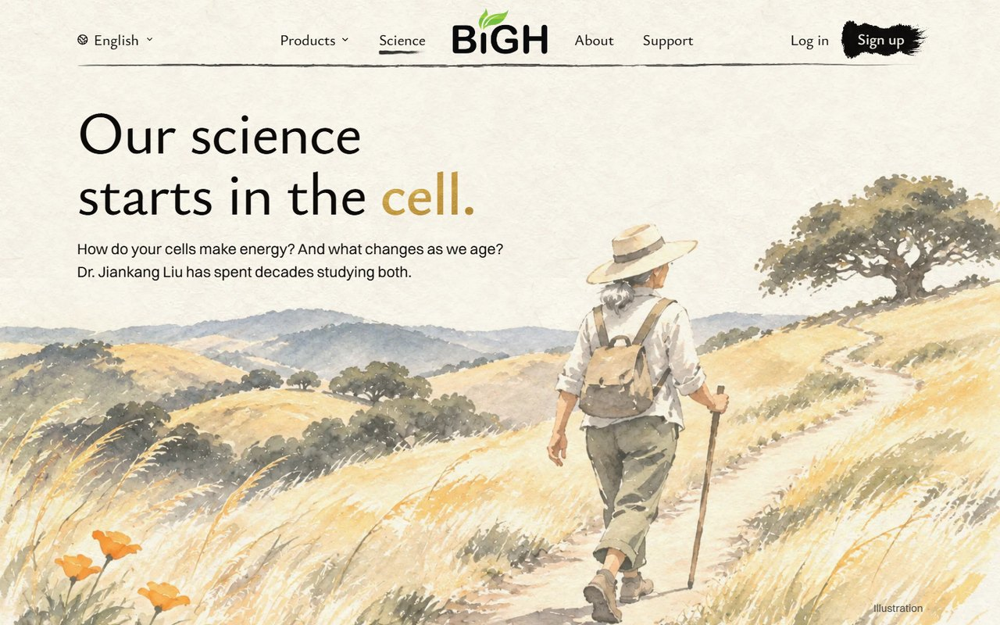
What holds it back
The picture still says "hiking" before it says "cell". The cloud shadow is a small movement. Grass that really moves would need a short painted video, which costs a few dollars, so I would ask you first.
A body is made of cells, so the walker is painted in small dabs, some of them gold leaf. A light passes over the gold now and then. Scroll dives into one dab, and it becomes the cell.
When you scroll
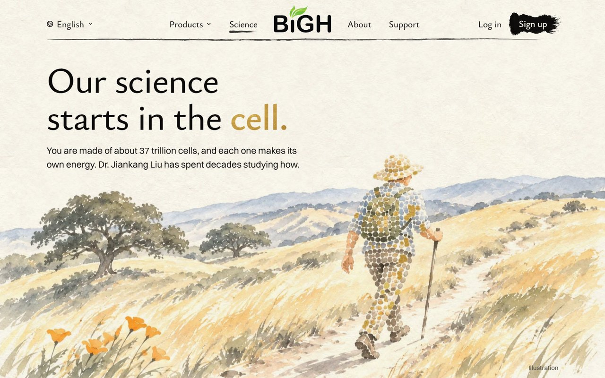
What holds it back
This is not the B I described. Gold laid on a normal walker came out looking like scratches, and a see-through body looked like a ghost, so I changed it to dabs. The dabs are clever, but they can read as pebbles or a patterned suit. It is below my usual bar. I am showing it because you asked to see all four.
The paintings are first samples from Codex, on your ChatGPT plan, with no spend. The walker in D and B is a new figure each time. A final build would get its own phone painting.